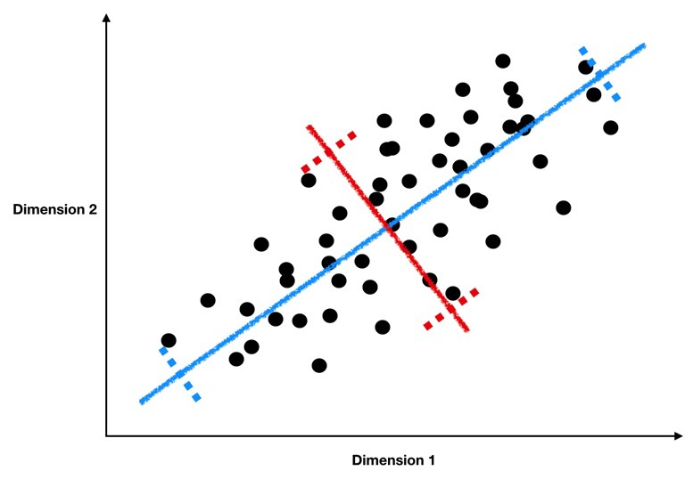

Lecture 25 (5/23/2022)¶
Announcements
Last time we covered:
Clustering: \(k\)-means and Gaussian Mixture Models
Today’s agenda:
Dimensionality reduction
import numpy as np
import pandas as pd
import matplotlib.pyplot as plt
import seaborn as sns
Dimensionality Reduction¶
What is it?¶
Broadly, the goal of dimensionality reduction is, as the name implies, to take data that exists in a very high dimensional space and find a way to represent the points in that space as accurately as possible with as few dimensions as possible.
Why would we want to do this?
High dimensional data is harder to visualize, harder to make hypotheses about
High dimensional data can make it more difficult to fit models
Aside: the “curse of dimensionality”: in machine learning settings, adding dimensions to your data will initially improve your models, but eventually, your data becomes sparse in very high dimensions, meaning it no longer clusters in useful ways. This will make your models worse or require much much more data to fit. Read about this on wikipedia here or on Medium here.
Broadly, dimensionality reduction techniques make it easier for us to visualize, reason about, and fit models to our data.
As a result, dimensionality reduction is often used alongside other analysis techniques we’ve discussed in this class: before performing classification or clustering on your data, it may be helpful to first reduce it to a lower dimensional space and then classify based on the lower dimensional feature representation or cluster in the lower dimension.
Example¶
The easiest way to illustrate dimensionality reduction is with an example.
Remember our gapminder dataset from earlier problem sets and lectures? In problem set 3, we looked at how income and population affect life expectancy. However, these are just three out of many different variables that gapminder tracks, including educational attainment, gender equality, internet users, the list goes on (you can play around with these different indicators on the site here).
Now, let’s say your job is to take a whole bunch of these indicators and try to figure out how different countries cluster across these variables. Or, maybe you want to predict something like life expectancy and you have all these variables at your disposal (the excellent blog here provides a similar motivation). The problem is, many of these predictors will be redundant and highly correlated with each other so you want to find the most useful ones for a model.
How do you go about doing this?
…
Solution: Principal Components Analysis (PCA)¶
What is it
Principal Component Analysis is based on a fairly simple but really powerful intuition:
If we plot a line through our data that minimizes how far our data points are from the line and maximizes the spread of our data points along the line, then we can do a pretty good job describing our data in just one dimension with that line.
Take a look at the graph below to see how we might find this sort of line through our data.

This image comes from a brief tutorial about PCA here (the writing is sexist but the explanation of PCA itself is pretty good). In the image, the blue points are our original data, and the red points are our data points mapped onto the line for different possible lines through our data. The red lines show the “error” in this mapping. What this is showing is that when the line through our data points is aligned with the purple edges, the projection of our data points onto that line (in red) has the lowest error and the highest variance, which is what we want.
The line through the purple edges does a good job describing the overall trend in our data.
Now, if we can find a second line perpendicular to the first, we can capture additional variance in our data with the second line that isn’t captured by the first line. PCA is often illustrated with a series of lines like this. These are called the principal components.

This image comes from a really awesome tutorial here. I highly recommend reading it :)
What defines the principal components is that they are lines that a) are perpendicular to each other, and b) capture the maximal amount of variance in our data. The first component captures the most variance, the second component captures the second most, etc.
What are the principal components
Isn’t this a lot like regression?? Yes! Just like a regression line can be specified in terms of coefficients \(\beta_1\), \(\beta_2\), …, \(\beta_n\) applied to our predictor variables \(x_1\), \(x_2\), …, \(x_n\), the principal components are described as a series of weights on each predictor variable. These weights map our data points (\(x_1\), \(x_2\), …, \(x_n\)) onto the principal component line in the same way that regression coefficients map our data points onto the regression line.
However, there’s one key difference between regression and PCA. Our best fitting regression line was the one that minimized sum of squared error in \(y\). Remember what that looked like? As you can see in the animation above, PCA is doing something slightly different; it’s minimizing each data point’s Euclidean distance to the line, rather than its distance in \(y\) alone. This is an important difference and it means the two techniques aren’t guaranteed to draw the same line. What we wanted with regression was the best way to predict \(y\). What we want with PCA is the best way to predict our data across all dimensions.
This awesome graphic came from another brief tutorial about PCA here.
How to calculate the principal components
So how do we estimate these super handy principal component lines? It turns out there’s a super handy analytic solution based on the eigenvectors and eigenvalues of our data (briefly: the principal components are the eigenvectors with the largest eigenvalues). We’re not going to get into how that actually works here, but it’s important that you know where they come from (we aren’t estimating them but calculating them). If you want to read more about it, take a look at this tutorial or this one, or the derivation on the wikipedia page for PCA here.
Dimensionality reduction with the principal components
To tie this all together, once we’ve calculated our principal components, we can represent our data in fewer dimensions by mapping each data point onto a small number of principal components. In other words, we change each data point from being written as (\(x_1\), \(x_2\), …, \(x_n\)) to something like (\(pc_1\), \(pc_2\), \(pc_3\)), where \(pc_1\) is our data point’s value when projected onto the first principal component line. Instead of the axes of our data being \(x_1\), \(x_2\), …, we now represent our data on new axes \(pc_1\), \(pc_2\), … that allow us to describe the pattern in our data more efficiently.
PCA in python: getting started¶
In this example, we’re going to walk through how to do PCA in python.
The sklearn decomposition module offers a range of other dimensionality reduction solutions. You can see the full list of those classes here and a brief overview tutorial of each one here (NOTE the tutorial has a lot of really spooky face images. You’ve been warned…).
Let’s start by revisiting an old dataset that we know has a pretty high-dimensional data representation. The crimestats data shows crime rates in cities throughout the US broken out by types of crimes.
crime = pd.read_csv("https://raw.githubusercontent.com/erik-brockbank/css2_sp22-public/main/Datasets/crimestats-clean.csv")
crime[crime.isna().any(axis = 1)]
crime = crime.dropna(how = 'any')
crime
| State | City | Population | Murder | Rape | Robbery | Assault | Burglary | Theft | GTA | |
|---|---|---|---|---|---|---|---|---|---|---|
| 0 | ALABAMA | Abbeville | 2955 | 0 | 1.0 | 1 | 6.0 | 16.0 | 83.0 | 6.0 |
| 1 | ALABAMA | Adamsville | 4771 | 0 | 1.0 | 20 | 32.0 | 45.0 | 351.0 | 20.0 |
| 2 | ALABAMA | Addison | 720 | 0 | 0.0 | 0 | 4.0 | 1.0 | 21.0 | 1.0 |
| 3 | ALABAMA | Alabaster | 28904 | 1 | 0.0 | 18 | 14.0 | 68.0 | 545.0 | 46.0 |
| 4 | ALABAMA | Alexander City | 15053 | 2 | 14.0 | 24 | 91.0 | 182.0 | 784.0 | 50.0 |
| ... | ... | ... | ... | ... | ... | ... | ... | ... | ... | ... |
| 8652 | WYOMING | Sundance | 1199 | 0 | 0.0 | 0 | 0.0 | 4.0 | 7.0 | 1.0 |
| 8653 | WYOMING | Thermopolis | 2912 | 0 | 0.0 | 0 | 17.0 | 10.0 | 70.0 | 1.0 |
| 8654 | WYOMING | Torrington | 5446 | 0 | 0.0 | 1 | 6.0 | 36.0 | 133.0 | 1.0 |
| 8655 | WYOMING | Wheatland | 3426 | 0 | 1.0 | 0 | 6.0 | 17.0 | 100.0 | 4.0 |
| 8656 | WYOMING | Worland | 4857 | 0 | 0.0 | 0 | 15.0 | 10.0 | 25.0 | 8.0 |
8408 rows × 10 columns
Now, let’s imagine we want to do some clustering to see whether there are notable criminal “profiles” of the different cities in this data.
We’ll extract just the columns with counts for each type of crime:
subset_cols = ['Murder', 'Rape', 'Robbery', 'Assault', 'Burglary', 'Theft', 'GTA']
subset = crime.loc[:, subset_cols]
subset
| Murder | Rape | Robbery | Assault | Burglary | Theft | GTA | |
|---|---|---|---|---|---|---|---|
| 0 | 0 | 1.0 | 1 | 6.0 | 16.0 | 83.0 | 6.0 |
| 1 | 0 | 1.0 | 20 | 32.0 | 45.0 | 351.0 | 20.0 |
| 2 | 0 | 0.0 | 0 | 4.0 | 1.0 | 21.0 | 1.0 |
| 3 | 1 | 0.0 | 18 | 14.0 | 68.0 | 545.0 | 46.0 |
| 4 | 2 | 14.0 | 24 | 91.0 | 182.0 | 784.0 | 50.0 |
| ... | ... | ... | ... | ... | ... | ... | ... |
| 8652 | 0 | 0.0 | 0 | 0.0 | 4.0 | 7.0 | 1.0 |
| 8653 | 0 | 0.0 | 0 | 17.0 | 10.0 | 70.0 | 1.0 |
| 8654 | 0 | 0.0 | 1 | 6.0 | 36.0 | 133.0 | 1.0 |
| 8655 | 0 | 1.0 | 0 | 6.0 | 17.0 | 100.0 | 4.0 |
| 8656 | 0 | 0.0 | 0 | 15.0 | 10.0 | 25.0 | 8.0 |
8408 rows × 7 columns
What does this data look like?
# NB: this takes ~60s to run
sns.pairplot(subset, plot_kws = {"alpha": 0.5})
Unfortunately, this data is high dimensional (7 \(x\) variables) and they seem very highly correlated.
This is a recipe for difficulties if we try to cluster it as-is.
… TIME FOR PCA!!!
Now, before we can apply PCA, there’s an important step here, which is to re-scale our data.
Remember way back in week 4 when we talked about z-scoring our data?
Now we get to put that skill to work!
Why would we want to z-score our data before doing PCA?
…
from sklearn.preprocessing import StandardScaler
subset_scaled = StandardScaler().fit_transform(subset)
subset_scaled = pd.DataFrame(subset_scaled, columns = subset.columns)
subset_scaled
Now, let’s fit the sklearn PCA class to our scaled data
from sklearn.decomposition import PCA
pca = PCA()
pca.fit(subset_scaled)
How did we do?
PCA in python: interpreting results¶
Let’s start by understanding these results in aggregate.
# How many components were there? (default: same number as dimensions of data)
pca.n_components_
# how much variance do we explain with each component? (remember our data has been z-scored)
pca.explained_variance_
# what proportion of the total variance is each component explaining?
pca.explained_variance_ratio_
Let’s take a look at this proportion of total variance result.
sns.pointplot(x = np.arange(1, 8), y = pca.explained_variance_ratio_)
plt.xlabel("Principal component")
plt.ylabel("Proportion of additional variance explained")
plt.show()
What does the result above mean??
…
Now, let’s take a closer look at our individual components:
pca.components_
# pca.components_[0]
sns.barplot(x = pca.components_[0], y = subset_cols)
plt.title("Component 1")
plt.show()
sns.barplot(x = pca.components_[1], y = subset_cols)
plt.title("Component 2")
plt.show()
What do the plots above tell us?
…
crime_transform = pca.transform(X = subset_scaled)
crime_transform = pd.DataFrame(crime_transform, columns = ['Component ' + str(i) for i in np.arange(1, 8)])
crime_transform['State'] = crime['State']
crime_transform['City'] = crime['City']
crime_transform
sns.scatterplot(data = crime_transform, x = "Component 1", y = "Component 2", alpha = 0.5)
plt.show()
What does the plot above tell us?
…
Wrapping up: a note on interpretability¶
As you might have intuited from the examples above, principal components can sometimes be hard to interpret.
It may require a lot of domain expertise or further analysis. For this reason, be thoughtful when using it.
However, because dimensionality reduction is so powerful (and this solution works so well), having a smaller set of principal components that requires interpretation is likely better than trying to work with high dimensional data in its original form.
Practicing PCA¶
If we get through all the above and still have time left over, let’s practice doing PCA on a different data set.
In the code below, read in the pokemon dataset that we’ve used in prior assignments.
Now, take a look at the columns used to evaluate a pokemon’s effectiveness: HP, Attack, Defense, Sp. Atk, Sp. Def, and Speed. Each pokemon occupies a position in this high-dimensional space. This makes it difficult to evaluate them across all these measures.
Can you find a lower dimensional way of representing each pokemon for easier clustering or analysis?
### YOUR CODE HERE
# Read in the data
pokemon = pd.read_csv("https://raw.githubusercontent.com/erik-brockbank/css2_sp22-public/main/Datasets/Pokemon.csv")
# Use these columns as the basis for PCA
cols = ['HP', 'Attack', 'Defense', 'Sp. Atk', 'Sp. Def', 'Speed']
pokemon